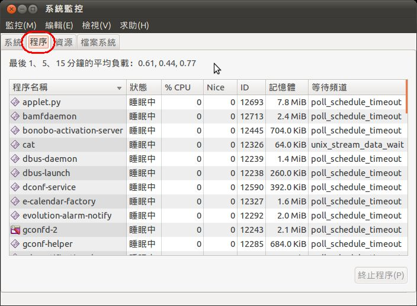
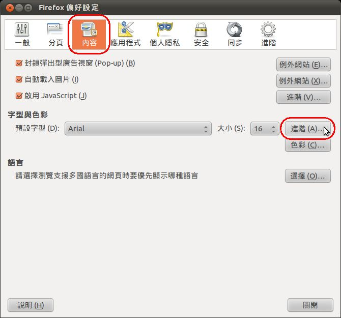
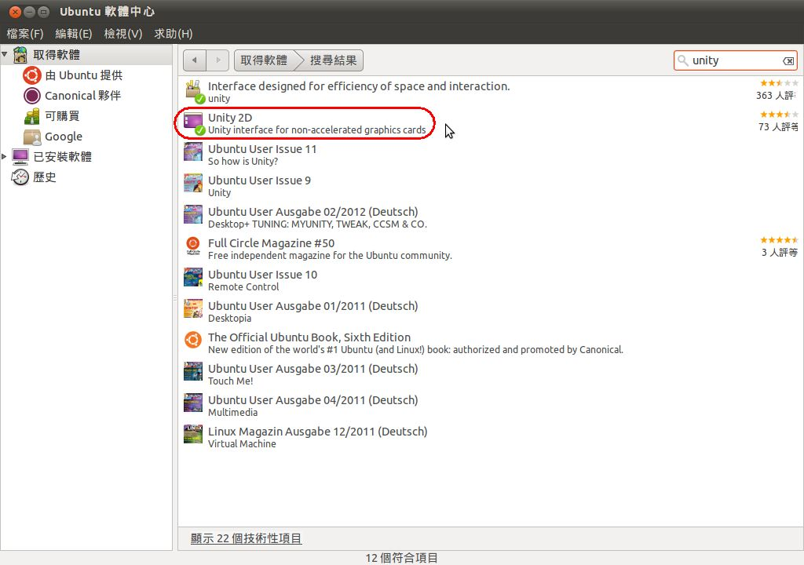
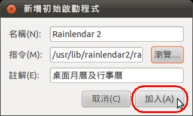

也紀念我們永遠的朋友 李士傑先生（Shih-Chieh Ilya Li）。
自由軟體轉換心得（一）：Ubuntu 11.04 在圖形介面下的基礎操作
前言：轉換的原因
引領我入電腦領域的師父，採用的就是微軟 MS-DOS 作業系統，因此理所當然地跟著用。此後就是加入 Windows 3.1，接著一路到 Windows 7。不論其他人怎麼評論微軟的產品，我始終不認為它們很糟，讓我不滿的主因只有一個：合法使用的代價頗高，非一般上班族所能負荷。以時下新進人員起薪新台幣二萬二來說，一套彩盒零售版的 Windows，再便宜的管道起碼也要薪水的四分之一左右。這樣的代價可以用多久？如果被微軟各種間接強迫使用者升級的方式所惑，大約每兩年還會再花一筆約三到四千的升級費。以個人使用者來說，等於每年花了四千到五千元買到作業系統的使用費，如果又加上微軟的 Office，費用更高。
微軟的間接強迫手段有哪些？大家耳熟能詳的有：宣稱多久之後不再提供更新與支援（同時暗示缺乏更新與支援的作業系統容易遭受惡意攻擊）、新軟體有多少好處、利誘硬體廠搭售 Windows 等。所以，除了 DIY 之外，市面上能買到的電腦幾乎全都搭配 Windows，一般消費者要從一開始就接觸到自由軟體，除非有人願意引領進門，否則還真不容易。
大約在 Windows XP 問世沒多久，我就開始考慮要建構一台全自由軟體的電腦來用，期望能徹底擺脫微軟三不五時的警告。基於此，近幾年都會花一點時間來研究並測試家用電腦完全自由化的實驗，測試的系統以 Ubuntu 為主。直到 Ubuntu 11.04 出現，才有滿意的成果。測試成熟後，乃以一台老舊的筆記型電腦，作為家中第一台具有全自由軟體的應用示範機。經過近半年的測試和使用，終於讓這台電腦能在完全符合家中使用需要的前提下，完全不必再用 Windows 環境。
只是我個人很堅持使用圖形介面，不大願意如同在 MS-DOS 時代一樣背文字指令。原因無它，圖形介面很容易理解和操作，而且在有限的選項內，很快就知道有沒有自己想用的東西。我的理念是，應用工具所需要的學習時間，是愈短愈好。電腦買來，是為了生活或工作上的應用，如果還要花上很多時間學習操作，就表示該應用的時間成本過高，不然就是屬於專家的工具，若非在該特定領域討生活或者有興趣，其實大可不必學。採用圖形介面的作業系統，可以讓使用者不必學太多偏向技術性的東西，就能讓電腦派上用場。
惟，周遭許多朋友對 Linux 的使用還存在於「必須要背很多文字指令，才有辦法使用」的刻板印象。雖然個人才疏學淺，為了證明這個觀念有其錯誤性，仍決定將自己的研究和使用心得，以系列文的方式和大家分享轉換的心得，希望對於想從 Windows "跳"出來的朋友有幫助。
關於本系列文，有一點必須先聲明：大家若留言或來信詢問相關問題，如牽涉到文字指令，我的回答大概就是：我不會。理由如下：
一、我對於 Linux 下的指令不熟，自己碰到的許多問題，網路上的前輩高手幾乎都有解決辦法，但所教的方式大都以文字指令為主，而我自己也常常搞不清楚，又如何能回答呢？
二、許多想使用 Linux 的朋友，並無意思想要成為高手，只是單純的基礎應用而已。我認為想要普及，就得先引起使用者「想用」的意願，在實際使用時才會發現其美妙之處，進而引起繼續"挖寶"的興趣，才有可能繼續去鑽研其他技巧，也就是文字指令的美妙世界。
請大家對我不必抱過高的期待（尤其是文字指令方面），以免浪費你我的寶貴時間和網路資源。
系統安裝的幾個重點
Ubuntu 的安裝相當簡單，相關的過程和技巧可以參考 Ubuntu 的官網教學，在其下載網頁內，有各種不同的安裝方式可供大家參考（參考網址：https://www.ubuntu.com/download/ubuntu/download）。基本上，圖形介面下的安裝過程並沒有太大的難度，過程也和官網的教學相似，在此就不浪費篇幅。
至於版本的選擇，當然是愈新愈好。原因無他，新版本才會支援新技術，有需要時才不會扼腕。當然也要看硬體本身有沒有支援相對應的功能。安裝完成後，第一次使用 Ubuntu 時，若硬體效能不足以讓系統的某部份功能完全發揮時，會出現警示，讓使用者知道"極限"何在。以我的老筆電來說，在顯示部分就遇到相關警示。在此先羅列其主要規格如下：
- 筆電的廠牌型號：Fujitsu S6230
- CPU：Intel(R) Pentium(R) M processor 1.60GHz
- 記憶體：1.5 GB
- 顯示晶片：Intel 855GM
- 硬碟：ATA FUJITSU MHV2120AH PL，120 GB
以現在常見的圖形效果來說，顯示卡效能很顯然不夠，在 Ubuntu 底下完全不能使用 Unity 效果，只能使用傳統介面。所幸檢視圖片和觀賞影片不但正常，還比 Windows XP 底下還漂亮。若安裝 11.10，不但會出現警示，實際播放影片時，還會同時出現 RGB 三色鬼影。因此只有死心塌地的安裝 11.04 的版本。
一、磁碟分割
關於磁碟分割，對於 Linux 來說，只需要系統碟和置換空間碟 (swap)。然而，Ubuntu 所需要的空間不大，即使考慮之後還要安裝其他的應用軟體，總共大概也只要 15 GB 就夠了。（除了 Ubuntu 預設會安裝者之外，我在軟體中心選了 40 個應用軟體來安裝，可用空間居然還有 8.5 GB）。至於 swap，預設建議是 1.5 GB，如無特別需要，使用建議的大小即可。
所以磁碟空間配置的方式，最單純的作法當然是 swap 分配 1.5 GB，其他都給系統碟。只是我還想保留筆電所附的 Windows XP，所以磁碟分割就要另行規劃。至於為何要保留 Windows XP？一來這是已經花了錢的可用資源，不可隨便浪費（搭配各種自由軟體來用，照樣合法又好用）。二來，可在同樣的硬體資源中，比較看看做同樣的事，到底何者能勝出。（目前的心得：各有擅場，有些項目無法比較）
基於這樣的目的，我的磁碟分割如下：
- Ubuntu 系統碟：15 GB
- swap：1.5 GB
- WindowsXP 系統碟：35 GB
- 資料碟1（檔案系統為 FAT 32）：4 GB
- 資料碟2（檔案系統為 NTFS）：63.5 GB
FAT 32 這一個磁碟，實在是因為自己認知有誤所導致的錯誤分割。以前曾測試過某個版本的 Ubuntu，當時對於 NTFS 的支援度還不夠，對於此類磁碟只能讀取而不能直接儲存檔案，想要儲存，必須要安裝額外的應用程式，但效果不佳。進行分割時，只想到要保留一個可以和 Windows XP 共用檔案的磁碟，卻沒先上網查資料確定需不需要採用 FAT 32，雖說事後要合併到 NTFS 碟也不難，但總是得多費些時間處理。
至於系統的安裝順序是先安裝 WindowsXP，然後才安裝 Ubuntu。如此 Ubuntu 內的 GRUB 會自動建立開機選單，讓使用者在開機前可以選擇想用的作業系統。
二、驅動程式
安裝作業系統後，最怕的就是某個硬體沒有驅動程式可安裝。如果以作業系統問世以前的硬體來安裝，通常不會有這樣的問題，尤其是相隔數個世代的產品。要是用比較新的硬體呢？以 Ubuntu 來說，我認為最主要的關鍵是作業系統有沒有支援網路卡或網路通訊晶片。只要這一項能安裝起來，就可透過「額外的驅動程式」這項工具，自網路下載並安裝所需的驅動程式。
▲ 圖4：控制中心內的"額外驅動程式"選項，藉此可安裝特定硬體的驅動程式
目前多數的電腦大概都採用大廠的網路通訊晶片，如 Broadcom、3 Com、瑞昱半導體、Intel 等，Ubuntu 必定有支援，所以系統安裝完畢後要連上網路，應該不會有困難才是。
系統更新
從 Ubuntu 官網下載回來的 CD 光碟映像檔（格式為 ISO），檔案小，下載較快，不過安裝完之後的更新數量，與已發行時間的長短成正比，若下載 DVD 映像檔，則所需的更新時間比較少。（DVD 下載的參考網址：https://cdimage.ubuntu.com/）
為何要進行系統更新呢？除了與系統本身的安全性有關者之外，通常也包括應用程式的安全或版本更新。為了讓系統的運作穩定、安全和有新功能可用，系統更新有其必要。通常開機且網路連線完成，系統即會自行進行檢查，此時會出現如下的畫面，以滑鼠按一下「安裝更新套件」鈕，就會進行下載並安裝。
當然，我們也可以自己手動來進行更新。作法如下：
步驟一：
按一下面板上的「系統」，從選單內點選「管理」＼「更新管理員」。
步驟二：
出現系統更新的視窗後，如沒出現可用的更新，可按一下「檢查」鈕。
步驟三：
此時會出現檢查和下載清單的視窗。
步驟四：
檢查完畢後，若有可用的更新檔案就會顯示出來，且會區分為安全更新和選用更新。可以按一下「更新說明」，以檢閱更新檔案的基本說明。
步驟五：
在此建議大家在更新之前要了解一下到底更新檔案有何重點，比較容易掌握電腦的狀況。如有不想更新的檔案，可以取消勾選。選定後按一下「安裝更新套件」。
步驟六：
此時會出現「認證」的視窗，此處所需要輸入的密碼就是帳戶的密碼。輸入完畢後按一下「認證」就會進行更新檔案的下載和安裝。
【補充說明】
Ubuntu 安裝的過程中，會要求使用者建立一個具有完整權限的帳戶（包括帳戶名稱和密碼），當進行各種系統重要設定值的改變或安裝移除軟體時，都必須使用這個帳戶來認證，以確保系統的安全。如果該電腦只是自己使用，為了方便起見，只要建立一個此種權限的帳目即可。如果是多人使用，為了避免非管理員的使用者隨意安裝來路不明的軟體或更改重要的系統設定值，可設定部分權限的帳戶給電腦管理者以外的人使用。
檢視和設定重要的系統資訊
系統安裝完畢後，對於系統本身有哪些重要資訊或可用的設定項目，有必要了解並設定，以符合自己的習慣，提升使用效率。以下是我認為重要的項目，分別一一述之。
一、系統監控：了解一下機器運作狀況
「系統監控」裡面並沒有可以設定的項目，但有助於了解作業系統版本為何、重要硬體的基本資料、已經載入使用的程式、記憶體使用狀況等。當某些程式在使用上覺得有些異常，也許可以到這裡來看看是不是因為該程式過度消耗硬體資源的緣故，而可決定是否要繼續使用該程式或搭配其他方式檢查看看該程式有沒有問題。
步驟一：
依序點選面板的「系統」＼「管理」＼「系統監控」。
步驟二：
在「系統」標籤下所顯示的是作業系統的版本與 CPU、記憶體等重要硬體的基本資料。
步驟三：

▲ 圖14
點選「程序」標籤，顯示的是目前已載入的程式及其運作情形、耗用的記憶體狀況等。
步驟四：
「資源」標籤內所顯示的是重要硬體及網路的使用紀錄。
二、滑鼠設定：提升操作效率
滑鼠是目前在圖形介面下最主要的操控工具（以後說不定會被「觸控」功能取代），操作的靈敏度，一定程度上會影響操作效率和使用者的心情。只是每個人的需要不同，建議先行調整到最適合自己使用的狀況會比較好。
步驟一：
依序點選面板上的「系統」＼「偏好設定」＼「滑鼠」。
步驟二：
在「指標速度」下的項目，分別拖曳滑桿調整指標移動的靈敏度。調到適合自己的靈敏度後，按一下「關閉」即可。
三、桌面主題：看的舒適為主
桌面主題除了視覺感官喜好的問題之外，相關配色會影響長期使用的舒適度，因此選擇一個適合自己的桌面主題也值得注意。
步驟一：
在桌面上按一下滑鼠右鍵，從快選功能表內點選「更改桌面背景」。
步驟二：
在「佈景主題」標籤內，有一些配色方式可以選擇，預設是「Ambiance」，在此選擇自己喜歡者即可。建議不要選擇顏色反差大的配置方式，否則需要長時間使用電腦時，很容易讓眼睛感到疲累。
四、語言：減少理解上的隔閡
在 Ubuntu 內安裝應用程式最方便的方式莫過於透過其所提供的「Ubuntu 軟體中心」，只是某些軟體的繁體中文語言套件不一定會同步發行，因此會出現軟體的使用介面有部分非繁體中文的怪現象。所幸，我們隨時可以透過「語言支援」，檢查看看是否已經發布。當然，使用「軟體更新」時也會對這一方面進行檢查。
另外，如果想要將系統更改為其他的語系，也可以在這裡進行設定。
步驟一：
點選面板的「系統」＼「管理」＼「語言支援」。
步驟二：
此時會自動檢查有沒有新的語言套件可用，如有可以依據視窗的提示來決定要不要安裝。
步驟三：
接著會開啟「語言支援」視窗。在「語言」標籤內顯示的是目前所用的語系及可用的語系，有需要可加以變更或安裝。
五、字型安裝：符合顯示效果的各種需要
安裝作業系統的同時，Ubuntu 已經有不少字型可用。雖然中文字型屈指可數，不過若非專業的工作者應該也用不到太多種字型，畢竟字型的運用頻率不高，但卻佔頗大的空間。只是，某些時候還是會用到特定字型，不裝還真是不行。例如到全國法規資料庫去列印法規時，該網站所提供的友善列印版本，預設的文字是新細明體，若沒有安裝此字型，列印出來的版面就不整齊，有些地方還可能疊字，因此了解字型的安裝還是必要的。
步驟一：
Ubuntu 已經預設好一些使用者可能常用的資料夾，並且有快速開啟的方法，此處的範例是把所需要的字型檔案儲存在「文件」資料夾內，故依序點選面板的「位置」＼「文件」。
步驟二：
此時會開啟檔案管理員，所顯示的即是在系統碟內的「文件」資料夾。在想要安裝的字型檔上按二下滑鼠。
步驟三：
預設會以字型瀏覽器開啟字型檔。此處要注意，如果左邊的欄位內無法正常顯示中文，通常安裝後在應用軟體內常常也無法正常顯示，所以要先確定可用後，才按右下角的「安裝字型」。
步驟四：
安裝字型後，右下角可能會顯示為安裝失敗，但這並不表示真的安裝失敗。
步驟五：

▲ 圖27
安裝是否成功，要看帳戶內的「.font」的資料夾內有沒有把字型檔複製過來。所以在左邊欄位內點選使用者帳戶的資料夾，接著在右邊的欄位內找出「.font」並開啟之。
步驟六：
開啟後只要有看到安裝的字型檔，就表示安裝成功。舉一反三，只要是能在 Ubuntu 內正常使用的字型檔，直接將之複製到此處就能用了。
步驟七：

▲ 圖29
接著開啟 Firefox 來看看是否真的安裝成功。在功能表列上依序點選「編輯」＼「偏好設定」，切換到「內容」標籤，在「字型與色彩」這一欄內按一下「進階」。
步驟八：
在任一設定字型的欄位內（除了「比例字型」以外），點選下拉式選單按鈕，在選單內就可以看到剛剛安裝的字型。
軟體的安裝與移除
光是安裝作業系統，是不足以應付使用者所需，還得要安裝各式各樣的應用軟體才行。因此了解如何安裝應用軟體，自然是必要的。
在 Ubuntu 內安裝軟體的方式主要有三種，一是透過「Ubuntu 軟體中心」，二是從「Synaptic 套件管理程式」，三是下載 Debian 可用的程式。其中最簡單的自然是從「Ubuntu 軟體中心」，因為不必花時間到各個網站逐一尋找。而從「Synaptic 套件管理程式」安裝，其實和「Ubuntu 軟體中心」很像，只是這裡有不同的分類和版本可用，如果比較清楚想用哪個版本，從這裡安裝倒是不錯的選擇。最後一種則是軟體中心沒有，但在該應用程式的官網有提供 Ubuntu 可用的 Debian 檔案，自然是可以下載來安裝，安裝方式也很簡便。
一、軟體的安裝
此處只介紹比較簡易的「Ubuntu 軟體中心」和 Debian 檔，至於「Synaptic 套件管理程式」則對於移除非「Ubuntu 軟體中心」的軟體很有用，故於後面介紹之。
（一）Ubuntu 軟體中心
Ubuntu 軟體中心，和現今流行的 APP Store 很像，使用者可以在此尋找合用的自由或開源軟體來使用（當然也可選擇付費軟體），讓使用者省去許多尋找合用軟體的時間。自行尋找的軟體，還得先確定可否在 Ubuntu 底下使用，而在這裡出現的，一定都是可以用的啦！
既然我的筆電顯示晶片老到無法使用 Unity 效果，就別用它吧……可是看過 Unity 那個位於左邊的啟動列，覺得真的很不錯，實在蠻想用的。但總不能為了這個就把還可用的筆電丟掉，換一台新的吧？這也太浪費了！沒關係，在軟體中心內有 Unity 2D，惟，這並非是要讓顯示效能不足的電腦能使用所有的 Unity 效果，只是有一些比較有特色的東西而已，也就是我最想用的 Unity 面板和啟動列。以下就以 Unity 2D 來示範安裝的步驟。
步驟一：
依序在面板上點選「應用程式」＼「Ubuntu 軟體中心」。
步驟二：
在搜尋欄位內輸入「Unity」，下方的欄位內會顯示搜尋的結果。點選「Unity 2D」後按一下「更多資訊」，就可看一下該軟體的相關說明，包括程式的簡介、版本和有無相關程式。
步驟三：
檢視完畢，確定想安裝後，可勾選相關的附加程式，然後按一下「安裝」。
步驟四：
和前述相同，會出現認證視窗，輸入帳戶密碼後按「確定」。
步驟五：
此時會開始下載並安裝，圖中箭頭所示即安裝進度。
步驟六：
安裝完畢後會顯示安裝日期，而原來的「安裝」鈕也會變為「移除」。我們按一下上面的「搜尋結果」看看安裝後還有哪些變化。
步驟七：

▲ 圖37
在清單中的 Unity 2D 圖示下方，會多出一個已勾選的小圖，表示這台電腦已經安裝了該軟體。
步驟八：
安裝完成後，按面板最右方的「開關」鈕，選擇「登出」，用相同的帳戶重新登入一次，就可以看到 Unity 2D 的效果了。（範例圖中所示乃按下左上角的 Ubuntu 鈕，所顯示的程式選擇介面）
安裝 Unity 2D 後，日後開機均以此為預設桌面，如不想以之開機，可在選擇要登入的帳戶後，在下方面板的「作業階段」欄位內，選擇其他的開機桌面，如「傳統 Ubuntu 桌面」等。
（二）下載並安裝 Deb 版本的軟體
Ubuntu 作業系統是 Debian（通常簡寫為 Deb）下的一個分支，原則上 Deb 版本的應用軟體，在 Ubuntu 下是可以安裝使用。安裝後絕大多數都能正常運作，僅少數會有不穩定的現象，除了軟體本身的問題外，也可能是和其他軟體不相容的關係。當然，若開發者有提供 Ubuntu 版本時，相容性和穩定度都比較好，當然以之為首選囉！底下將以 Google Chrome 為例來示範。
順帶一提，Ubuntu 預設的瀏覽器是 Firefox，不過我覺得近來的 Firefox 表現不佳，無論是瀏覽體驗或是技術更新，明顯和 Google Chrome 有別。若大家喜歡使用 Google Chrome，在 Ubuntu 軟體中心的「網際網路」分類下，可以找 Chromium 來安裝。這是 Google Chrome 的源頭計畫，功能和操作方式並無明顯差異，只不過更新的速度比較慢，已知的安全漏洞相對修補得慢。像我這種容易因此而心理有疙瘩的人，自然就會改用 Google Chrome。不過最近兩個版本的更新速度愈來愈接近，建議擇一安裝就好。
步驟一：

▲ 圖39
到 Google 的瀏覽器下載網頁，把 Ubuntu 版本的 Google Chrome 下載至電腦。
步驟二：

▲ 圖40
Google 提供的版本相當齊全，選擇合用者來下載。
步驟三：

▲ 圖40
Google 網頁內預設是邊下載邊安裝。惟，現在很多瀏覽器為了安全起見，對於此類會直接安裝的檔案，會改讓使用者先下載後再決定要不要安裝。當然，用意是讓使用者有自我檢查的機會，避免因滑鼠點按錯誤而安裝了不想用的軟體。（很多網頁就是故意把連結弄得很近，使用者不小心就會安裝所提供的「免費」軟體！）
步驟四：

▲ 圖41
將檔案儲存到想存放的資料夾內。（預設是帳戶資料夾下的「下載」）
步驟五：

▲ 圖42
開啟存放檔案的資料夾。
步驟六：

▲ 圖43
在所開啟的資料夾內，可看見剛剛下載回來的程式安裝檔案（副檔名為 *.deb）。按二下該檔案。
步驟七：

▲ 圖44
等待一下後會開啟 Ubuntu 軟體中心，按一下「安裝」，以便開始安裝程序。
步驟八：

▲ 圖45
同樣會出現認證視窗，如前所述，輸入密碼後就會開始進行安裝，完成後就可以使用了。
二、軟體的移除
主要的方法有二，一是從「Ubuntu軟體中心」，適用於移除從軟體中心安裝的程式；二是「Synaptic 套件管理程式」，主要目的是移除自行下載的程式。因為自行下載的程式，往往不會出現在軟體中心的「已安裝軟體」的清單內，故無法以第一個方法移除。
（一）從軟體中心
步驟一：
和安裝軟體一樣，先開啟「Ubuntu 軟體中心」，在左邊欄位內點選「已安裝軟體」後，右邊的欄位就會出現已安裝軟體的清單。點選想移除的軟體，該項目的右邊就會出現「移除」鈕，按一下該鈕，就會進行移除程序。
步驟二：

▲ 圖47
在「認證」視窗內輸入密碼後按「認證」。
步驟三：
開始進行移除，和安裝一樣也會顯示進度。
步驟四：
移除完畢後，該軟體的前方就沒有表示已安裝的勾選圖示。下一次開啟「已安裝軟體」時，該軟體就不會出現在已安裝軟體清單內。
（二）從「Synaptic套件管理程式」
步驟一：

▲ 圖50
依序點選「系統」＼「管理」＼「Synaptic套件管理程式」。首先會出現要求輸入密碼的視窗，比照前述安裝或移除軟體的「認證」處理即可。
步驟二

▲ 圖51
在「快速過濾」的欄位內輸入想移除的軟體名稱，下方的清單欄內就會出現有關的程式。在程式前的核取方塊如有顏色，表示該程式已經安裝在電腦內。
步驟三：

▲ 圖52
在該程式上按滑鼠右鍵，從選單內點選「標記為徹底移除」。
步驟四：

▲ 圖53
此時前方的核取方塊會有打叉的符號，表示將會被移除。同時工具列上的「套用」鈕就變為可用，按一下該按鈕。
步驟五：

▲ 圖54
此時會出現「摘要」視窗，告知將要移除的項目，讓使用者再確認一次，以免誤刪。確認要刪除的話，就按一下「套用」。
▲ 圖55
在認證視窗內輸入密碼後按「認證」。
步驟六：

▲ 圖56
進行刪除中。刪除完畢後，該項目也會從清單內移除。
設定一開機啟動某程式
有些程式必須要在開機時就啟動才有用處，例如每日的行事曆或工作清單等，如此才能在開機完畢後就知道當天該做什麼事。類似這一類的軟體在安裝時，不見得會在安裝後就出現在「啟動應用程式清單」內，這時只好自行手動加入囉！底下就以我喜歡使用的行事曆行程管理軟體 Rainlendar 2 為例，示範如何把程式加入「啟動應用程式清單」內。（Rainlender 2 非 Ubuntu 軟體中心內所提供的軟體，乃另行下載安裝者也）
步驟一：

▲ 圖57
按一下「開關」鈕，點選「系統設定值」。
步驟二：
開啟的是「控制中心」視窗，在「個人」分類內，按二下「啟動應用程式」。
步驟三：
此時會開啟「啟動應用程式偏好設定」視窗，按一下「加入」鈕。
步驟四：
接著還會再開啟「新增初始啟動程式」視窗，在「名稱」欄內輸入應用程式的名稱，以便於日後管理；而在「註解」欄內輸入該程式的簡單的說明，以免日後忘了這到底是什麼。最後按一下「指令」右邊的「瀏覽」鈕。
步驟五：
在「位置」欄內選擇檔案系統所在的磁碟機，然後依序開啟 user\ lib\ Rainlendar 2 資料夾，找到 Rainlendar 2 並點選之，隨之按「開啟」。
步驟六：

▲ 圖62
回到上個視窗後按「加入」。
步驟七：
在「啟動應用程式」的清單內就會有 Rainlendar 2 的項目，勾選後按「關閉」。
步驟八：
以後開機時就會自動啟動 Rainlendar 2，桌面上就會自動開啟相關的內容，不必每次都得到應用程式清單內去開啟。
在桌面上新增啟動圖示
在測試過程中，我發現有些應用程式無法順利地加入 Unity 2D 的啟動列中（或許以文字指令修改設定檔後就可以，但本文開宗明義說過，就是不使用此法），偏偏遇到的又是常用的應用程式，在等到新版本之前，還是要想個可以快速啟動的方法才行，否則使用起來太沒效率。
「新增啟動圖示」算是一個不錯的解決方法，它的原理很簡單，就是在桌面上建立一個可以直接開啟應用程式的設定檔（在 Windows 內稱為捷徑）。惟，對於比較喜歡有乾淨桌面的人來說，這是個會破壞桌面底圖美感的方法。底下將以 Krusader 這個雙視窗檔案管理軟體為例來說明。（此一軟體安裝自 Ubuntu 軟體中心）
步驟一：
在桌面上按滑鼠右鍵，點選清單中的「新增啟動圖示」。
步驟二：

▲ 圖66
在「名稱」欄內輸入應用程式的名稱；在「備註」欄內輸入簡單的說明。最後按一下「指令」右邊的「瀏覽」鈕。
步驟三：
在「位置」欄中選擇檔案系統所在的磁碟機，然後依序開啟 /usr/bin 找到 krusader 並點選，接著按「開啟」。
步驟四：

▲ 圖68
回到上個視窗後按「確定」即完成設定。若想更改圖示，可在現有的圖示上按一下。
步驟五：
此時會開啟「選擇圖示」的視窗，顯示原有的檔案存放位置為：/usr/share/icons/hicolor/scalable/apps。可在此處選擇其他喜歡的圖示。只要點選檔案，視窗的右邊會出現預覽圖示。如找不到喜歡的圖示，可以在左邊的「位置」欄位內點選「pixmaps」資料夾（路徑為：/usr/share/pixmaps）
步驟六：
在此選擇喜歡的圖示後按「開啟」。
步驟七：
回到上一個視窗後按「確定」。
步驟八：
桌面上就會出現能直接啟動 Krusader 的圖示，在上面按兩下，就會啟動 Krusader 這個雙視窗檔案管理程式。
設定「首選應用程式」和「檔案預設開啟之應用程式」
某些常用的應用程式，遇到相關應用情境時，總希望是使用自己最熟悉的一個，萬不得已時才使用次要的相關程式。為了方便起見，可以事先設定，之後遇到此類應用時，就能以之開啟。
若是遇到特定檔案要開啟呢？此時「首選應用程式」就派不上用場了，而是要將該類型檔案設定為需特定應用程式來開啟，也就是所謂的檔案與應用程式的關聯設定。在 Ubuntu 內，HTML 檔案預設的開啟應用程式為 Firefox，底下將示範如何改為 Google Chrome。當然，圖片檔、聲音檔或影像檔等等，都可用相同的方法來修改喔！
一、「首選應用程式」的設定
步驟一：
開啟「控制中心」，點選左邊欄位內的「Set Preferred Applications」。
步驟二：
在「網際網路」標籤內，「瀏覽器」的欄位中可以選擇已安裝的瀏覽器程式。
步驟三：
選擇完畢後，按一下「關閉」即可。以後只要是使用瀏覽器的情境，就會以自己設定好的瀏覽器來開啟。
二、設定「檔案預設開啟之應用程式」
步驟一：
開啟「檔案管理員」，選擇存放 HTML 檔的資料夾，在檔案上按右鍵，點選「屬性」。
步驟二：
切換到「以此開啟」標籤，會顯示目前預設開啟的瀏覽器與其他可用的瀏覽器，選擇其一為開啟此類檔案的預設應用程式。選擇完畢後按一下「關閉」即可。以後只要在此類檔案上按二下滑鼠，就會以所選擇的應用程式開啟。
結語
以上是我認為 Ubuntu 初次使用者最該了解的部份，當然還有很多實用且好用的功能，在篇幅限制下唯有留待大家去發掘囉！相信了解這一些，想要以 Ubuntu 電腦來作一些常見應用，應該是不成問題啦！
專欄總覽


E-Mail：contact@openfoundry.org Address：台北市南港區研究院路2段128號 中央研究院資訊科學研究所 . 隱私權條款. 使用條款

評論
謝謝您的鼓勵！還以為此長篇大論 沒人想看呢！